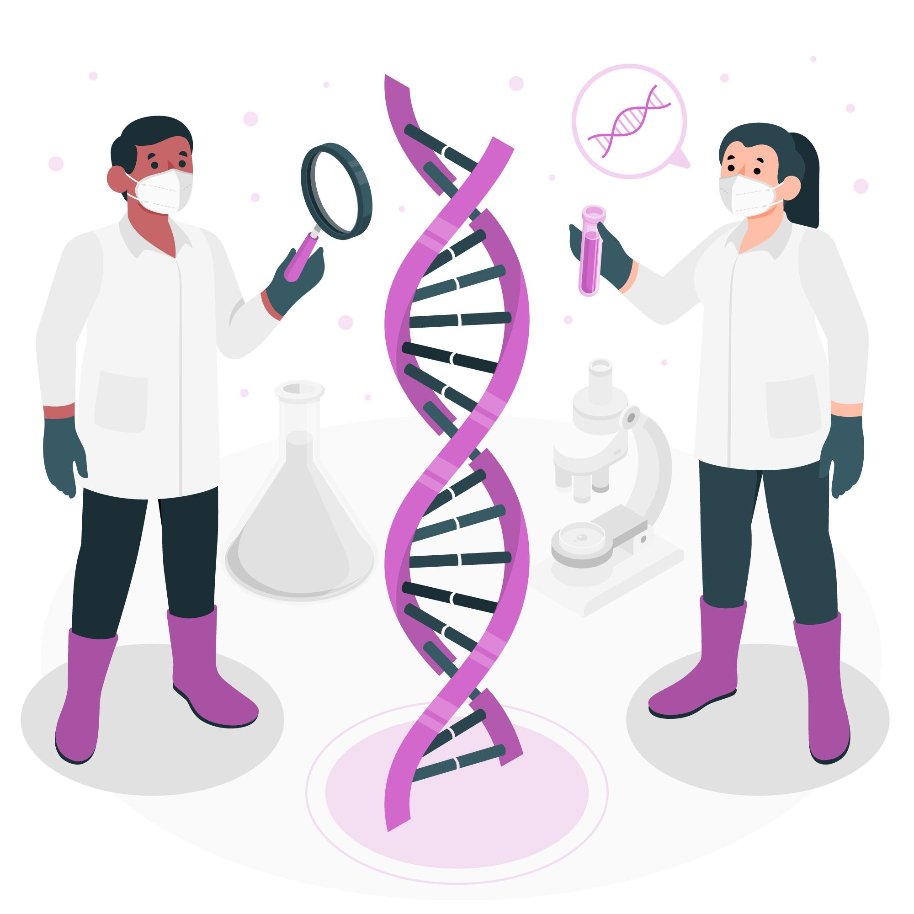

Inicio

UNIVERSIDAD NACIONAL DE LOJA
FACULTAD DE EDUCACIÓN, EL ARTE Y LA COMUNICACIÓN
CARRERA DE PEDAGOGÍA DE LAS CIENCIAS EXPERIMENTALES INFORMÁTICA

 |
OBJETIVO DEL CURRÍCULO: O.CN.B.5.3. Integrar los conceptos de las ciencias biológicas para comprender la interdependencia de los seres humanos con la biodiversidad, y evaluar de forma crítica y responsable la aplicación de los avances científicos y tecnológicos en un contexto histórico-social, para encontrar soluciones innovadoras a problemas contemporáneos relacionados, respetando nuestras culturas, valores y tradiciones.
OBJETIVO DESAGREGADO: Comprender los conceptos principales de la herencia genética: teoría cromosómica, fenotipo, genotipo, homocigoto, heterocigoto, dominancia y recesividad. Ref O.CN.B.5.3
DESTREZAS CON CRITERIO DE DESEMPEÑO:
CN.B.5.1.11. Usar modelos y describir la función del ADN como portador de la información genética que controla las características de los organismos y la transmisión de la herencia, y relacionar el ADN con los cromosomas y los genes.
CN.B.5.1.17. Investigar las causas de los cambios del ADN que producen alteraciones génicas, cromosómicas y genómicas, e identificar semejanzas y diferencias entre estas.
ENFOQUE PEDAGÓGICO: El recurso es gamificado porque incorpora elementos propios de los juegos, como niveles progresivos que permiten avanzar conforme se completan actividades, además, incluye la obtención de estrellitas, insignias y otros reconocimientos visuales que motivan al usuario a participar y mejorar su desempeño. Estos componentes fomentan el compromiso y la retroalimentación continua, características esenciales de la gamificación.
NIVEL AL QUE VA DIRIGIDO: Segundo de Bachillerato General
EDAD: 16 a 17 años
ÁREA DE CONOCIMIENTO: Ciencias Naturales
ASIGNATURA: Biología
IDIOMA: Español
Lee con atención el siguiente texto, ya que te servirá para desarrollar el crucigrama que se presenta a continuación.
 |
La especulación de que los cromosomas podrían ser la clave para comprender la herencia llevó a varios científicos a examinar las publicaciones de Mendel ya reevaluar su modelo en términos del comportamiento de los cromosomas durante la mitosis y la meiosis. En 1902, Theodor Boveri observó que el desarrollo embrionario adecuado de los erizos de mar no ocurre sin la presencia de cromosomas. Ese mismo año, Walter Sutton observó la separación de los cromosomas en células hijas durante la meiosis. En conjunto, estas observaciones condujeron al desarrollo de la Teoría Cromosómica de la Herencia, que identificó a los cromosomas como el material genético responsable de la herencia mendeliana. La Teoría Cromosómica de la Herencia se propuso mucho antes de que existiera evidencia directa de que los rasgos se transmitieran en los cromosomas. Los críticos señalaron que los individuos poseían muchos más rasgos segregantes independientes que cromosomas. Fue solo después de varios años de realizar cruces con la mosca de la fruta, Drosophila melanogaster, que Thomas Hunt Morgan proporcionó evidencia experimental que apoyaba la Teoría Cromosómica de la Herencia. |
Lee el siguiente relato titulado "Descubriendo los Caminos del ADN: La Teoría Cromosómica de la Herencia", donde conocerás cómo un experimento con simples moscas de la fruta cambió para siempre nuestra comprensión de la genética.
|
En 1910, Thomas Hunt Morgan comenzó su trabajo con Drosophila melanogaster, una mosca de la fruta. Eligió moscas de la fruta porque se pueden cultivar fácilmente, están presentes en grandes cantidades, tienen un tiempo generacional corto y solo tienen cuatro pares de cromosomas que se pueden identificar fácilmente bajo el microscopio. Tienen tres pares de autosomas y un par de cromosomas sexuales. En ese momento, ya sabía que X e Y están relacionados con el género. Utilizó moscas normales con ojos rojos y moscas mutadas con ojos blancos y las cruzó. En las moscas, el color de ojos de tipo salvaje es rojo (XW) y es dominante sobre el color de ojos blanco (Xw). Pudo concluir que el gen para el color de ojos estaba en el cromosoma X. Por lo tanto, se establece que este rasgo estaba ligado al cromosoma X y fue el primer rasgo ligado al cromosoma X en ser identificado. Se dice que los machos son hemicigotos, ya que tienen un solo alelo para cualquier característica ligada al cromosoma X.
El color de los ojos en las moscas de la fruta fue el primer rasgo ligado al cromosoma X que se descubrió; por lo tanto, los experimentos de Morgan con moscas de la fruta solidifican la teoría cromosómica de la herencia. |
 |
| Título | Herencia y Genética: ¿Qué sabemos realmente? |
|---|---|
| Descripción | El software educativo está diseñado para facilitar el aprendizaje significativo de los conceptos relacionados con la herencia y genética. A través de una recurso interactivo e intuitivo, los estudiantes podrán explorar diferentes contenidos relacionados con la herencia, identificar sus características y descubrir su importancia, el recurso incorpora elementos multimedia como videos, animaciones, narraciones, simulaciones y minijuegos didácticos, que fomentan la curiosidad científica y el pensamiento crítico, además de incluir desafíos tipo "elige tu propia aventura", donde los usuarios deben tomar decisiones basadas en el tema, lo cual fortalece la comprensión. Este software está alineado con los objetivos curriculares de Ciencias Naturales y responde a una metodología activa y participativa, que promueve el aprendizaje autónomo, la indagación y el trabajo colaborativo |
| Autoría | Universidad Nacional de Loja |
| Licencia | Creative Commons BY-SA 4.0 |
Este contenido fue creado con eXeLearning, el editor libre y de fuente abierta diseñado para crear recursos educativos.
Obra publicada con Licencia Creative Commons Reconocimiento Compartir igual 4.0